What is Linear Regression?
Simply put, we predict scores on one variable from the scores on a second variable
The variable we are predicting is called the criterion variable and is referred to as Y. The variable we are basing our predictions on is called the predictor variable and is referred to as X. When there is only one predictor variable, the prediction method is called simple regression.
In simple linear regression, the predictions of Y when plotted as a function of X form a straight line. A simple regression line looks something like the figure shown below
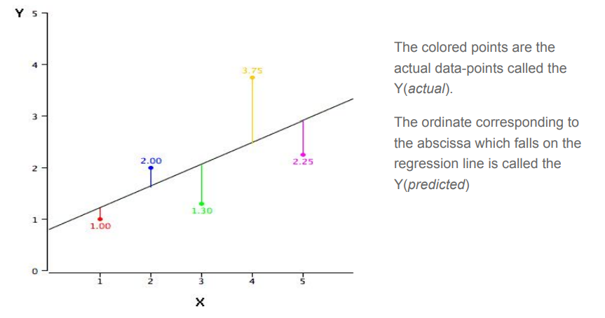
How to find this line?
YBy far, the most commonly-used criterion for the best-fitting line is the line that minimizes the sum of the squared errors of prediction. That is the criterion that was used to find the regression line. The sum of the squared errors of prediction is lower than it would be for any other regression line. We’ll look into the mathematics behind minimizing this error would be discussed later .
Motivation
Before we get into the tricky mathematical equations, we’ll look into the question “Where do I use regression?”
There are 14 attributes in each case of the dataset. They are:
- CRIM - per capita crime rate by town
- ZN - proportion of residential land zoned for lots over 25,000 sq.ft.
- INDUS - proportion of non-retail business acres per town.
- CHAS - Charles River dummy variable (1 if tract bounds river; 0 otherwise)
- NOX - nitric oxides concentration (parts per 10 million)
- RM - average number of rooms per dwelling
- AGE - proportion of owner-occupied units built prior to 1940
- DIS - weighted distances to five Boston employment centres
- RAD - index of accessibility to radial highways
- .TAX - full-value property-tax rate per $10,000
- .PTRATIO - pupil-teacher ratio by town
- B - 1000(Bk - 0.63)^2 where Bk is the proportion of blacks by town
- .LSTAT - % lower status of the population
- .MEDV - Median value of owner-occupied homes in $1000's
For cases like these when value of one variable, (here, the value of homes) depends on various factors, we retort to linear regression. Before actually performing regression it is essential to perform some data exploration steps, since often variables tend to be highly correlated.
Mathematical Insight
The calculations are based on the statistics MX is the mean of X, MY is the mean of Y, sX is the standard deviation of X, sY is the
standard deviation of Y, and r is the correlation between X and Y.
The slope (b) can be calculated as follows:
b = r sY
/sX
and the intercept (A) can be calculated as:
A = MY
- bMX
.
Correlation constant
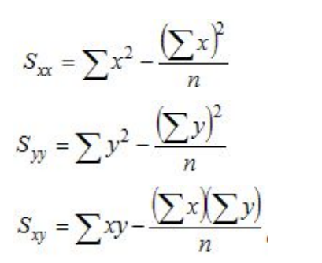
where the "sigma" symbol indicates summation and n stands for the number of data points. With these quantities computed, the correlation coefficient is defined as:
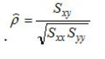
Hypothesis Function : The hypothesis function for linear regression is given by:
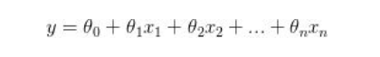
Where, n : number of features
θj = parameter associated with j th feature
Cost function : We define a function, known as the cost function with which we can
relate the error of our model. So a lower the cost function would imply a better model.
In general, the cost function gives us the cost for producing a particular output
The cost function is what is minimised to obtain the best fitting curve.
For linear regression the cost function is given by :
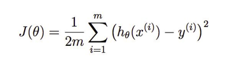
Gradient Descent:
Gradient descent is an optimization algorithm used to find the values of parameters (coefficients) of a function (f) that minimizes a cost function .
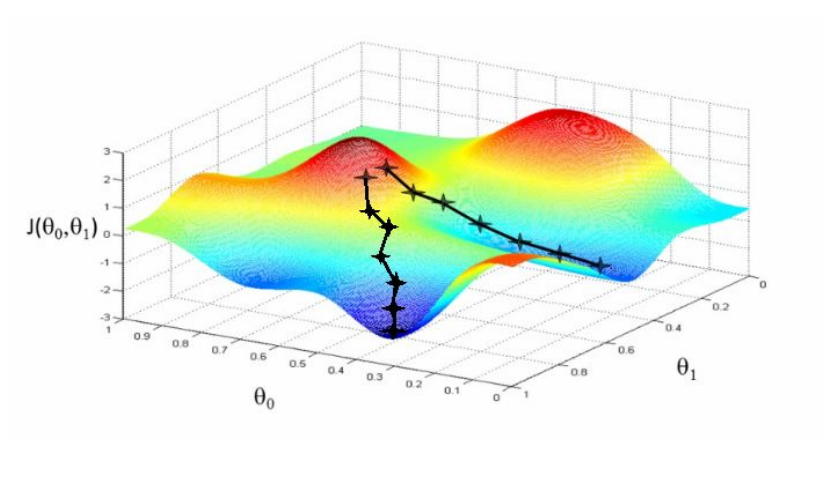
For a regression with two parameters θo and θ1 , the ‘cost space ‘ plot looks like this. The aim of the gradient descent algorithm is to find such values of θ0 and θ1 so that the cost J(θ) is minimized .
The Algorithm
There is a fixed algorithm by which we vary θ0 and θ1 which is given below :
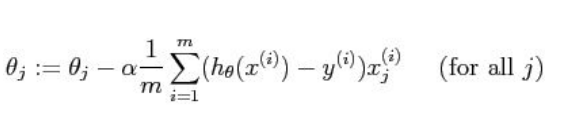
If is α too small, a large number of iterations is required before cost function converges
Now, if α is too large, then there is a chance that it may fail to converge or it can even diverge.
How will one really know that he has already reached the minimum? It turns out that at the local minimum, derivative will be equal to zero because the slope of the tangent line at this point will be equal to zero. So, if the parameters are already at a local minimum then one step with gradient descent does absolutely nothing and that is what we are looking for
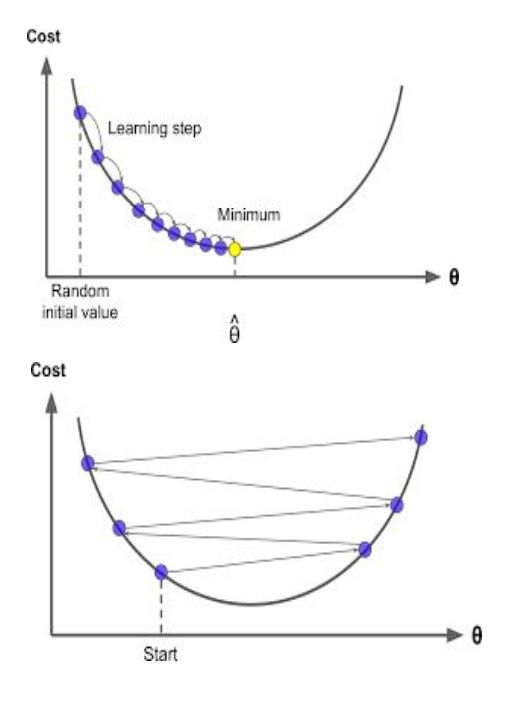
For multivariate linear regression, the same algorithm for gradient descent will be followed. The only difference would be that we j takes values from 0 to n if there are n features (excluding the constant term)
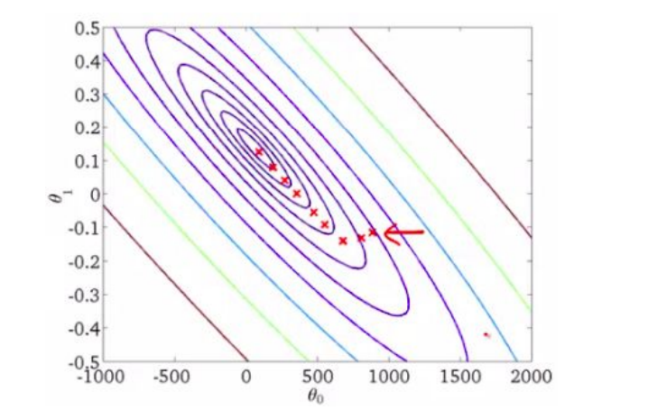
This is a contour plot of the cost function with θ0 and θ1 on x-axis and y-axis respectively.As we move closer towards the centre of this plot, we get those values of θ0 and θ1 which give the minimum value of the cost function.
Model Validation
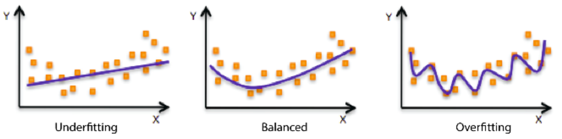
Under-fitting -
Underfitting refers to a model that can neither model the training data nor generalize to
new data.
An underfit machine learning model is not a suitable model and will be obvious as it will
have poor performance on the training data.
Over-fitting -
Overfitting refers to a model that models the training data too well.
Overfitting happens when a model learns the detail and noise in the training data to the
extent that it negatively impacts the performance of the model on new data. This means
that the noise or random fluctuations in the training data is picked up and learned as
concepts by the model. The problem is that these concepts do not apply to new data
and negatively impact the models ability to generalize.
Cross Validation
To limit overfitting and underfitting we use cross - validation. Cross validation is of 3
types :
1.Hold - out method
Here we randomly divide the available set of samples into two parts: a training set and a
validation or hold-out set.
The model is fit on the training set, and the fitted model is used to predict the responses
for the observations in the validation set.
The resulting validation-set error provides an estimate of the test error.
Limitations -
The validation estimate of the test error can be highly variable, depending on precisely
which observations are included in the training set and which observations are included
in the validation set.
In the validation approach, only a subset of the observations — those that are included
in the training set rather than in the validation set — are used to fit the model.
This suggests that the validation set error may tend to overestimate the test error for the
model fit on the entire data set.
2.K-fold Cross Validation
Estimates can be used to select best model, and to give an idea of the test error of the
final chosen model.
Randomly divide the data into K equal-sized parts. We leave out part k, fit the model to
the other K−1 parts (combined), and then obtain predictions for the left-out kth part.
This is done in turn for each part k = 1, 2,...K , and then the results are combined.
Setting K = n yields n-fold or leave-one out Cross-validation (LOOCV).
Tips and Tricks:
Normalization:
The regression equation is simpler if variables are standardized so that their means are equal to 0 and standard deviations are equal to 1 [N(0,1)].
This makes the regression line:
r is the correlation,
ZX is the standardized score for X.
Note that the slope of the regression equation for standardized variables is r
Regularization:
Regularization is technique used to avoid over fitting.
If we are over fitting model then, it requires penalizing theta parameters in order to
make just right fit. This will lead to use regularization in model fitting.
Now cost function will be defined as below :
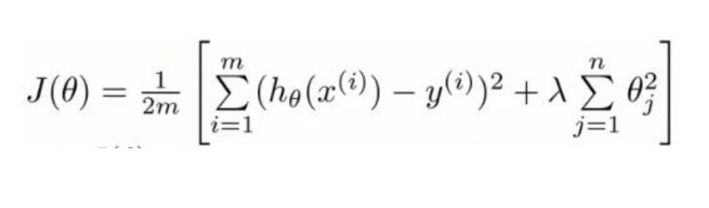
Hence gradient descent for regularised linear regression will be:
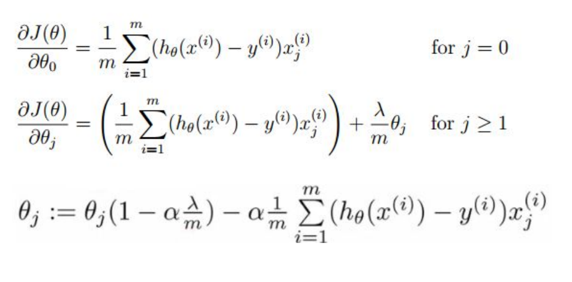
Quantifying Parameters:
R squared:
R-squared , known as the coefficient of determination is a statistical measure of how
close the data are to the fitted regression line.
Calculation of R squared:
Since R2
is a proportion, it is always a number between 0 and 1.
If R 2
= 1, all of the data points fall perfectly on the regression line.
If R2
= 0, the estimated regression line is perfectly horizontal.
Problems with R-squared
Every time a predictor is added to a model, the R-squared increases, even if due to chance alone. It never decreases. Consequently, a model with more terms may appear to have a better fit simply because it has more terms.
Adjusted R -squared
The adjusted R-squared compares the explanatory power of regression models that contain different numbers of predictors . The adjusted R-squared increases only if the new term improves the model more than would be expected by chance. It decreases when a predictor improves the model by less than expected by chance
P-value:
The P-value is the probability that our data would be at least this inconsistent with the
hypothesis, assuming the hypothesis is true.
The p-value for each independent variable tests the null hypothesis - that the
variable has no correlation with the dependent variable. If there is no correlation,
there is no association between the changes in the independent variable and the shifts
in the dependent variable. In other words, there is no effect.
If the p-value for a variable is less than your significance level, your sample data
provide enough evidence to reject the null hypothesis for the entire population. Your
data favors the hypothesis that there is a non-zero correlation. Changes in the
independent variable are associated with changes in the response at the population
level. This variable is statistically significant and probably a worthwhile addition to your
regression model.
On the other hand, a p-value that is greater than the significance level indicates that
there is insufficient evidence in your sample to conclude that a non-zero correlation
exists.
For example, let’s say we wanted to know if a new drug had an influence on IQ. These
are what we would want to pick as our null and alternative hypotheses:
- Null hypothesis – The average IQ of a population that uses the drug will be the same
as the average IQ of a population that does not use the drug.
- Alternative hypothesis – The average IQ of a population that uses the drug will be
different from the average IQ of a population that does not use the drug.
These are the only two options, so if we reject the null hypothesis, we can accept the
alternative hypothesis
In order to reject the null hypothesis, we need to pick a level of statistical significance.
By default, this is 5 or 1 percent. If we get a P-value smaller than our significance level,
we can reject the null hypothesis.
In other words, a predictor that has a low p-value is likely to be a meaningful addition to
your model because changes in the predictor's value are related to changes in the
response variable.
T-value:
The "t'' statistic is computed by dividing the estimated value of the parameter by its
standard error.
(The standard error is an estimate of the standard deviation of the coefficient, the
amount it varies across cases).This statistic is a measure of the likelihood that the
actual value of the parameter is not zero. The larger the absolute value of t, the less
likely that the actual value of the parameter could be zero.
Interpreting the model :
Using all the features given in the dataset , the model created showed the following summary
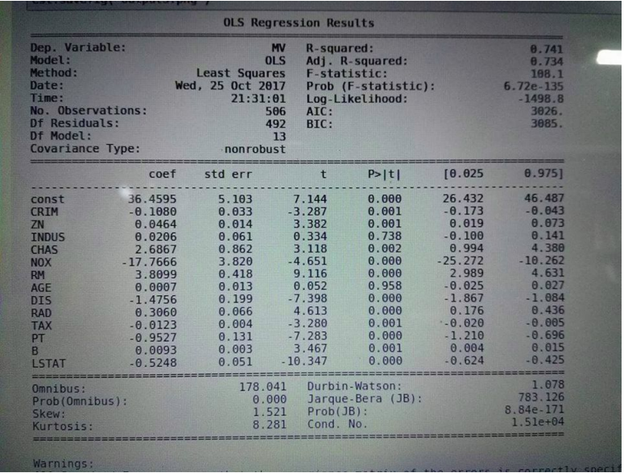
Notice that the value P value for two features INDUS and AGE is much high , indicating
the variables are not significant to be kept in the model .
Removing the two features would not affect the model fit that much .
Correlation Matrix:
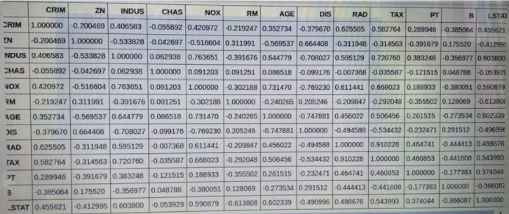
From the matrix we observe that RAD and TAX have a high correlation of 0.91. So we first remove RAD and check if the model has improved. Then we do the same with TAX and then take the better model out of the two.